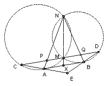

AB is tangent to the circles CAMN and NMBD. M lies between C and D on the line CD, and CD is parallel to AB. The chords NA and CM meet at P; the chords NB and MD meet at Q. The rays CA and DB meet at E. Prove that PE = QE.
Solution

Angle EBA = angle BDM (because CD is parallel to AB) = angle ABM (because AB is tangent at B). So AB bisects EBM. Similarly, BA bisects angle EAM. Hence E is the reflection of M in AB. So EM is perpendicular to AB and hence to CD. So it suffices to show that MP = MQ.
Let the ray NM meet AB at X. XA is a tangent so XA2 = XM·XN. Similarly, XB is a tangent, so XB2 = XM·XN. Hence XA = XB. But AB and PQ are parallel, so MP = MQ.

© John Scholes
jscholes@kalva.demon.co.uk
30 Aug 2000
Last corrected/updated 18 Oct 2002